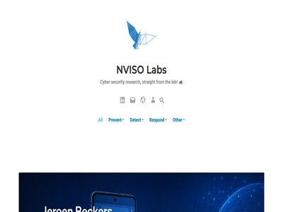
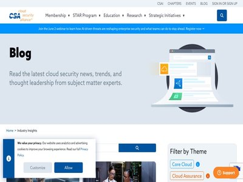
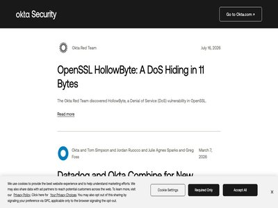
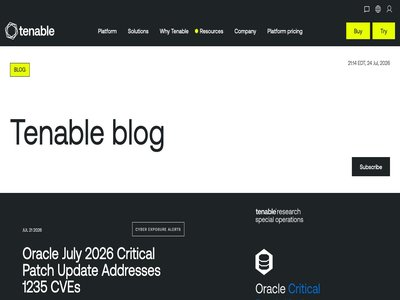

November 12, 2026 · 48 articles

Lego Takes BrickLink Marketplace Offline After Detecting Unusual Activity
November 12, 2026
Lego has taken its BrickLink Marketplace offline after detecting unusual activity as the company investigates the incident (Infosecurity Magazine)

PHP2Shell Exploitation on Check Point Gateway
November 12, 2026
Key findings Introduction We have now confirmed that, in late October 2026, approximately one week after a security fix became available, activity originating from 130.94.19[.]2... (Check Point Research)

Chrome, Firefox Updates Patch Over 180 Vulnerabilities
November 12, 2026
Google fixed 83 flaws with a new Chrome 157 release, and Mozilla addressed 99 bugs in Firefox 160. The post Chrome, Firefox Updates Patch Over 180 Vulnerabilities appeared first... (SecurityWeek)
Attacker Targets 60,000 GitHub Repositories in Credential Theft Campaign
November 12, 2026
Using thousands of hijacked accounts, the wfx-loot campaign planted a CI secret stealer that ran in over 1,800 GitHub repositories. The post Attacker Targets 60,000 GitHub Repos... (SecurityWeek)

Operation Endgame malware takedown turns up over 6 million stolen logins
November 12, 2026
Police in nine countries, working with Europol, took down servers behind the Gootloader, CastleRAT and StealC malware operations this week and recovered more than 6 million cred... (Help Net Security)
Daylight Lands $80 Million for AI-Powered Security Operations
November 12, 2026
The company plans to accelerate product development, hire new talent, expand its US presence, and enter new markets. The post Daylight Lands $80 Million for AI-Powered Security... (SecurityWeek)

Hackers exploiting ScreenConnect plugin flaw to spread malware across hundreds of PCs
November 12, 2026
ConnectWise disables third-party extensions in 400 environments as bughunters uncover auth hole may let crims bypass MFA (The Register - Security)

Kazakhstan-linked hackers used AI agent to spy on Central Asian governments
November 12, 2026
Suspected Kazakhstan-linked hackers used an artificial intelligence agent to help spy on Central Asian governments, steal sensitive documents and infiltrate critical infrastruct... (The Record)

Zoom Fixes Critical Windows Vulnerability Allowing Privilege Escalation
November 12, 2026
Zoom fixes two Windows Workplace flaws, including a critical bug that could let unauthenticated attackers remotely escalate privileges. Zoom has released security updates to fix... (Security Affairs)

Breaking the Semantic Cache: A LiteLLM Case Study (CVE-2026-89032)
November 12, 2026
Semantic caching can reduce AI inference costs, but isolation failures can expose sensitive data and enable malicious responses or tool calls. NVISO explores these risks through... (NVISO Labs)

Microsoft: Recent Windows updates cause SQL Server performance issues
November 12, 2026
Microsoft has confirmed that Windows updates released since the October 2026 Patch Tuesday are causing SQL Server performance and stability issues. [...] (BleepingComputer)

Google Cloud Warns Three AMD Turin CPU Flaws Could Leak Data Across Processes in VMs
November 12, 2026
Google Cloud VMs on AMD Turin chips need a guest OS patch and a stop-and-start to protect against three CPU side-channel flaws, Google said this week. The company has already ap... (The Hacker News)
Webinar: See How Identity Blind Spots Put Your SOC at Risk and How to Close Them
November 12, 2026
Security teams have more alerts, logs, and monitoring tools than ever. Yet when an attack happens, one simple question can still take too long to answer: Who or what is behind t... (The Hacker News)

Microsoft Rolls Out an Automatic Fix for Windows 11 KB5132061 Installation Failures: Deployment to Take 24-48 Hours
November 12, 2026
After multiple reports of KB5132061 installation failures, Microsoft began rolling out an automatic fix. No manual action is required, and devices that receive the fix will auto... (Joho no Todai)

Exploit Attempts for GPUStack Authentication Bypass (CVE-2026-102895), (Thu, Nov 12th)
November 12, 2026
CVE-2026-102895 is a trivial authentication-bypass vulnerability. GPUStack is also an attractive target. It is open-source software that manages clusters of GPUs, which are typi... (SANS ISC)
New N-central Exploits Work Against Patched Servers, Enable Root RCE and Windows SYSTEM Access
November 12, 2026
N-able on Thursday said it's investigating a new public disclosure containing claims of additional vulnerabilities in on-premise versions of N-central running version 2026.4.1 H... (The Hacker News)
Calendar Invites and Live Proxies: Inside a Google Session Hijacking Campaign
November 12, 2026
Since mid-August 2026, a phishing operation has been stealing live Google sessions from corporate users. Every check defenders normally lean on to judge a link came back clean,... (The Hacker News)
PTC Patches Critical Windchill and FlexPLM Flaw That Could Enable Remote Code Execution
November 12, 2026
PTC has released patches for a new critical vulnerability impacting Windchill and FlexPLM software that, if successfully exploited, could result in remote code execution. The se... (The Hacker News)
Notion Customer Data Compromised in Fireworks AI Hack
November 12, 2026
The attackers accessed chat transcripts for fewer than 1% of Notion workspaces. Most transcripts were unattributable. The post Notion Customer Data Compromised in Fireworks AI H... (SecurityWeek)
Microsoft Entra adds a seven-day safeguard against irreversible identity deletion
November 12, 2026
Microsoft Entra’s Hard Deletion Protection, now in preview, gives administrators a seven-day window to recover selected identities before they can be permanently erased. The fea... (Help Net Security)
Stolen Claude API keys can turn Claude Code into a remote-controlled implant
November 12, 2026
Darktrace researchers turned Claude Code into a remote-controlled implant in a lab test, steering the coding agent through the memory stores feature of Anthropic’s Claude platfo... (Help Net Security)

Inside an AI Attack Against a US Retailer
November 12, 2026
When hand-typed commands failed to breach a US retailer, the attacker turned to AI-generated scripts, achieving lateral movement in minutes. (Dark Reading)

Why scammers want you to allow push notifications
November 12, 2026
Browser push notifications are a common nuisance, and they can make people think their device is infected with adware. (Malwarebytes Labs)

0% GPU utilization: How SANSAR hides Linux cryptomining
November 12, 2026
Elastic Security Labs analyzes SANSAR, a Linux cryptomining orchestrator that manages miners over Tor, alongside a kernel rootkit, GPU monitoring hooks and a backdoor that retri... (Elastic Security Labs)

WFX Phantom: The GitHub Actions Secret Stealer That Deletes Its Tracks
November 12, 2026
A coordinated botnet of compromised GitHub accounts launched a widespread attack, opening seemingly harmless pull requests before pushing a malicious shell script directly to de... (StepSecurity Blog)
Security Teams Must Shift from Patching to Mitigation in the AI Era
November 12, 2026
Symantec’s Dick O’Brien says the rapid closure of the patch window means organizations must move beyond patching and adopt an assume exploit mindset (Infosecurity Magazine)
Photos: IRISSCON 2026 cybercrime conference
November 12, 2026
IRISSCON 2026, the annual cybercrime conference organized by IRISSCERT, took place at the Aviva Stadium in Dublin on November 11. The all-day event gives attendees a look at the... (Help Net Security)
NCSC Launches Cyber Adversary Testing to Boost Resilience
November 12, 2026
The UK’s National Cyber Security Centre has launched a new Cyber Adversary Simulation (CyAS) scheme (Infosecurity Magazine)
Hackers Target N-central Zero-Days as N-able Rushes Patches
November 12, 2026
The malicious activity started shortly after a researcher dropped over 30 zero-days. N-able patched the unauthenticated ones. The post Hackers Target N-central Zero-Days as N-ab... (SecurityWeek)
Hackers plant GSocket on Linux servers for persistent access
November 12, 2026
Multiple threat actors are abusing GSocket, a legitimate open-source remote access tool, to maintain access to Linux servers even after patching the vulnerabilities exploited to... (BleepingComputer)
AWS Emulator: Open-source tool for testing AWS apps locally, built by autonomous AI agents
November 12, 2026
Amazon Web Services has released AWS Emulator, a free tool that simulates AWS services on a developer’s laptop, a development server or in a continuous integration (CI) pipeline... (Help Net Security)
Critical Pre-Auth MongoDB Flaw (CVE-2026-118383) Can Crash Lagging Servers on Failover
November 12, 2026
A critical flaw in MongoDB Server allows an unauthenticated attacker to send two requests that trigger a crash on the database server. The crash occurs only if that server is la... (The Hacker News)
Critical Red Hat Quay Vulnerability Could Expose Private Container Images
November 12, 2026
Attackers could exploit a critical Red Hat Quay flaw to steal private container images, overwrite repositories and maintain persistent access. The post Critical Red Hat Quay Vul... (SecurityWeek)

PHP2Shell and Node2Shell: Find, Fix, and Verify Across Your Web Apps and APIs
November 12, 2026
Key Takeaways Neither flaw is in your application code. Every app and API on a vulnerable runtime inherits the risk. PHP2Shell (CVE-2026-109618, CVE-2026-109619) is fixed in PHP... (Qualys Blog)
Maersk Reveals Data Breach as Extortion Group Demands $5m
November 12, 2026
Maersk has revealed a threat actor extracted data from one of its legacy systems (Infosecurity Magazine)
.NET 11 security changes target the software supply chain
November 12, 2026
Microsoft has released .NET 11, a Standard Term Support (STS) release that will receive two years of support. .NET 10 is still the Long Term Support (LTS) option. The release co... (Help Net Security)
GitHub Agentic Autofix and the question of who owns a bad AI patch
November 12, 2026
In this Help Net Security interview, Marcelo Oliveira, VP of Product Management at GitHub, talks about who is accountable when an AI-generated patch fixes one flaw and introduce... (Help Net Security)
Dagster: Open-source cloud-native data pipeline orchestrator
November 12, 2026
Dagster is an open source orchestrator for data pipelines. It decides what runs, in what order, and when. It also tracks how the tables, datasets, machine learning models, and r... (Help Net Security)
Who collects the keys when an AI agent retires?
November 12, 2026
Think about the last time a good engineer left your company. Someone collected the laptop and the badge. IT revoked their logins before the end of the day. Their manager reassig... (Help Net Security)

CrowdStrike Named a Leader in the 2026 IDC MarketScape for Worldwide Augmented Identity Security Solutions
November 12, 2026
(CrowdStrike Blog)

SCKit Worm Installs Rogue ScreenConnect Clients and Session Cookie Relays Across Hundreds of Endpoints
November 12, 2026
Attackers are using cloud-hosted ScreenConnect panels to install rogue clients on hundreds of managed endpoints. (Huntress Blog)
CISOs say OT will survive a cyberattack, but their engineers aren’t so sure
November 12, 2026
Ask industrial security chiefs whether their plants would keep running through a full IT compromise, and every one who answered the SANS 2026 ICS/OT survey says yes. Thirty-eigh... (Help Net Security)
Bots pose as AI agents, AI agents pose as humans, and defenses believe both
November 12, 2026
Over one week in October, an online marketplace took 414,210 visits from traffic wearing the name of a widely used consumer AI agent. Every visit went for the sign-in page, and... (Help Net Security)
Disgraced former CA eMudhra blames buggy script for hopelessly weak certificates
November 12, 2026
Couldn’t get the hardware it needed to generate certs, so tried to code a workaround (The Register - Security)
35,578 Grok-Built Apps Were Viewable Without Authentication: Internal SpaceXSI Materials Also Exposed
November 12, 2026
Security company Claroc found that third parties could view 35,578 web apps built with Grok without signing in. The exposed apps included 24 created by employees of SpaceXSI and... (Joho no Todai)
NVIDIA Board Is Preparing to Remove CEO Jensen Huang, Multiple Outlets Report: New Workplace Allegation Shifts the Focus
November 12, 2026
Several major outlets reported on November 11 that NVIDIA's board was preparing to remove CEO Jensen Huang and looking for a successor. A reported extramarital relationship with... (Joho no Todai)
Chinese AI Project Scouts Spies in Taiwan Chip Industry
November 12, 2026
The CCP built a Big Data system to scrape reams of information and learn about individuals abroad, to potentially target and exploit them. Think Alice Huang Lite. (Dark Reading)
Japan Pushes Emergency Funding for Cybersecurity as AI-Assisted Breaches Rise
November 12, 2026
The package adds public-private cyber responders, an AI-focused team run by the economic ministry, and more leeway to use the government's new active cyber-defense powers. (Dark Reading)
November 11, 2026 · 58 articles

Cloud Security Alliance Announces Winners of 2026 Pitchapalooza
November 11, 2026
Winners recognized for pioneering technologies advancing agentic AI security and tackling emerging cybersecurity challenges SEATTLE - Nov. 12, 2026 - The Cloud Security Alliance... (Cloud Security Alliance)

CVE-2026-125926 - Server-side request forgery in the server registration and update API in mcp-gateway-registry
November 11, 2026
Bulletin ID: 2026-180-AWS Publication Date: 11/11/2026 13:00 PM PST Description: MServer-side request forgery (SSRF) in the server registration and update API in Amazon mcp-gate... (AWS Security Bulletins)

The global socket: how threat actors are weaponizing GSocket for stealthy C2
November 11, 2026
Threat actors are deploying GSocket on compromised Linux servers to keep encrypted remote access after the original vulnerability is patched. Learn how to detect, investigate, a... (Microsoft Security Blog)
Lessons from 59 Linux Kernel Bug Reports
November 11, 2026
Microsoft FORGE Lab researchers used codename MDASH to investigate Linux kernel vulnerabilities, resulting in 59 upstream bug reports, 33 assigned CVEs, and 38 merged fixes. The... (Microsoft Security Blog)

Hardening Self-Hosted Artifactory for Agentic Workloads
November 11, 2026
OpenAI has published a focused follow-up to its July report on the Hugging Face intrusion. This one covers a smaller event from the same month: on July 19, agents running in two... (JFrog Security Research)
eBPF Rootkits: Why Underground Actors Are Taking Notice
November 11, 2026
Linux eBPF rootkits can hide malicious activity and evade traditional detection methods without loading kernel modules. Flare reveals how these techniques are spreading through... (BleepingComputer)
Microsoft Fixes 1235 Flaws in Another Record Patch Tuesday
November 11, 2026
Microsoft patched a record-breaking 1235 CVEs in November’s Patch Tuesday (Infosecurity Magazine)
Microsoft Researchers Show AI Agents Can Be Backdoored by Editing Fewer Than 10 Neurons
November 11, 2026
An AI model can be given a hidden backdoor by editing fewer than 10 of its rarely used neurons, without retraining the model, Microsoft researchers have shown. When a chosen tri... (The Hacker News)
Baker Tilly notifies clients of data breach at third-party provider
November 11, 2026
The Baker Tilly Advisory Group is notifying clients that a data breach has compromised certain personal information about them and their dependents. [...] (BleepingComputer)

ARTEX and AI-Powered Red Teaming Tools: What Defenders Need to Know
November 11, 2026
Learn what Unit 42 discovered about attacker use of AI-powered red team tools, and how to mitigate these attacks. The post ARTEX and AI-Powered Red Teaming Tools: What Defenders... (Palo Alto Networks Unit 42)
Attackers Say 'Hello' to a Different Scale of Cloud Attack
November 11, 2026
Researchers dubbed an attack chain "Greeter" after discovering that attackers deliberately covered their trail by leaving "hello" messages in logs. (Dark Reading)
Shipping giant Maersk probes 'IT security incident,' data theft
November 11, 2026
Says it 'strongly' suspects attack limited to legacy system, and that nothing sensitive is at risk (The Register - Security)
Rubrik enhances DevOps Protection to preserve legitimate work during recovery
November 11, 2026
Rubrik has announced cyber recovery capabilities for DevOps platforms Microsoft Azure DevOps and GitHub. With built-in anomaly detection, blast radius investigation, and surgica... (Help Net Security)
CISA flags Cisco BroadWorks flaw as actively exploited in attacks
November 11, 2026
The US Cybersecurity and Infrastructure Security Agency (CISA) warned on Tuesday that hackers are now exploiting a high-severity Cisco BroadWorks vulnerability in attacks. [...] (BleepingComputer)
Threat Actors Exploit Openwave, Cisco BroadWorks Vulnerabilities
November 11, 2026
The flaws, CVE-2026-111793 and CVE-2026-20320, let attackers leak sensitive information, including configuration data. The post Threat Actors Exploit Openwave, Cisco BroadWorks... (SecurityWeek)

OT Refrigeration Control Systems Attack
November 11, 2026
What is the Attack? November 9, 2026 Update - Threat Attribution: On November 9, 2026, France's CERT-FR published a threat intelligence report attributing the October 11-12 atta... (FortiGuard Labs)
AI Pentest Tool AntiFox Abused To Steal AWS Credentials
November 11, 2026
Arctic Wolf saw attackers use the AntiFox pentest platform to hit IIS servers and AWS accounts. Arctic Wolf Labs has published research on attackers using AntiFox, an open-sourc... (Security Affairs)
eMudhra revokes 8 more CA certificates after private key mishap
November 11, 2026
Certificate authority eMudhra has revoked eight additional intermediate CA certificates after an investigation into its recent certificate security incident found improper handl... (BleepingComputer)
AI Raises the Stakes for Cyber Resilience
November 11, 2026
An organization's ability to quickly recover from a business disruption will be a competitive advantage in an era of AI-driven threats and business enablement. (Dark Reading)
N-able Takes N-central Platform Offline After Discovery of 33 Flaws
November 11, 2026
The RMM provider also released a hotfix as one of recommended mitigations to address public exploits for the alleged zero-days that allow for attacker takeover. (Dark Reading)

Ease of use and secure defaults in the new AWS experience
November 11, 2026
Starting on Amazon Web Services (AWS) is now more straightforward and more secure by default than it’s ever been. Over the past several months, we rolled out a new AWS experienc... (AWS Security Blog)

Critical RCE Vulnerability in Apache HTTP Server: Everything You Need To Know
November 11, 2026
Detect and mitigate CVE-2026-119618, a critical RCE vulnerability in Apache HTTP Server. According to Wiz data, 64% of cloud environments have resources vulnerable to CVE-2026-1... (Wiz Blog)

AntiFox Targeting AWS Credentials: The Latest Wave of AI Agent Attacks
November 11, 2026
Learn how AntiFox and ARTEX use agentic AI to find and exploit exposed credentials, what AWS intrusions reveal, and how security teams can reduce credential exposure. (GitGuardian Blog)
Part 4 - Cybersecurity journeys: What I’d tell my younger self
November 11, 2026
Over the past few weeks, I’ve introduced you to people who fell into security from the most unexpected places, who work in domains you’ve probably never heard of, and who were h... (AWS Security Blog)

Who Runs the Ransomware Group Qilin?
November 11, 2026
The cybercrime group Qilin has emerged as the world's most active ransomware affiliate program, claiming at least 365 victim organizations in the past three months alone. But ev... (KrebsOnSecurity)
Anthropic's Glasswing Finds Many Vulnerabilities Yet Delivers Few Fixes, Researcher Says
November 11, 2026
VulnCheck’s Patrick Garrity has found that seven months on, Project Glasswing resulted in only 217 vulnerabilities getting fixed, despite thousands reported (Infosecurity Magazine)
Today: CISO Forum Virtual Summit 2026 Day 2 - Join Cybersecurity Leaders Online
November 11, 2026
Designed for cybersecurity leaders, this immersive two-day virtual event is your premier destination to discuss, share, and learn innovative risk management and defense strategi... (SecurityWeek)
Suspected Chinese Malware Supplier Tied to Three Hacking Campaigns
November 11, 2026
Check Point links three China-nexus clusters through a shared Sparrow malware framework (Infosecurity Magazine)
Critical Xen Orchestra Flaws Exploited in Attacks
November 11, 2026
A critical authentication bypass allows attackers to execute arbitrary code as admin and take over XCP-ng nodes. The post Critical Xen Orchestra Flaws Exploited in Attacks appea... (SecurityWeek)
AntiFox AI Pentesting Platform Linked to Attacks That Accessed AWS Production Secrets
November 11, 2026
Cybersecurity researchers have disclosed details of a campaign in which an emerging agentic penetration testing platform called AntiFox has been used to steal Amazon Web Service... (The Hacker News)
Hackers use AntiFox AI agents in AWS credential-theft attacks
November 11, 2026
Attackers are using Alibaba Cloud to host self-managed instances of AntiFox, an open-source agentic penetration testing platform, to target web services and AWS environments. [...] (BleepingComputer)
The XG Files: Falcon C2 Flying Under The (Browser) Radar
November 11, 2026
We uncover Falcon C2, a browser-based threat framework targeting governments via malicious scripts, extensions, and the Antino implant. The post The XG Files: Falcon C2 Flying U... (Palo Alto Networks Unit 42)

Choosing QuePaxa, an unusual consensus algorithm
November 11, 2026
Cloudflare is building an experimental consensus service using a never-before-deployed consensus algorithm, QuePaxa. In this post we explain how QuePaxa works and why we chose it. (Cloudflare Blog)
AI Smart Glasses Breach University Exams: Half of Submissions Show Signs of AI as Schools Struggle to Adapt
November 11, 2026
About half of Australian university submissions showed signs of AI use. Universities have split assessment into tasks that ban AI and tasks that allow it, but smart glasses are... (Joho no Todai)
Remus malware claims Gmail access even after you change your password
November 11, 2026
Developers of the infostealer Remus claim their malware can retain access to a victim’s Gmail even after a password reset. (Malwarebytes Labs)
MongoDB Patches CVSS 9.5 Unauthenticated RCE in Replica Set Promotion Across Seven Release Lines
November 11, 2026
CVE-2026-118383 is an unauthenticated remote code execution vulnerability in MongoDB replica set promotion. It has a Critical CVSS v4.0 score of 9.5. Fixes are available in seve... (Joho no Todai)
N-able releases security hotfixes for zero-day vulnerabilities
November 11, 2026
N-able released hotfixes to address zero-day bugs affecting its N-central remote monitoring and management (RMM) platform, which were publicly disclosed over the weekend and for... (BleepingComputer)
Finite State Raises $27 Million to Secure Software and Firmware in Connected Devices
November 11, 2026
The Series C round will fund international expansion and more autonomous features for the firm’s device security platform. The post Finite State Raises $27 Million to Secure Sof... (SecurityWeek)
Muse sleep band users weren’t told their brain data was training AI
November 11, 2026
Muse maker Interaxon reportedly trained AI on users’ de-identified brainwave data, then revised its privacy policy after journalists asked questions. (Malwarebytes Labs)
Fortinet Patches Nearly 100 Vulnerabilities
November 11, 2026
The massive drop comes after the company integrated frontier AI models into its product security testing. The post Fortinet Patches Nearly 100 Vulnerabilities appeared first on... (SecurityWeek)

Three People Arrested for AI-Enhanced Impersonation Fraud
November 11, 2026
It’s hard to believe how lucrative this crime can be: According to a press release from the United States attorney’s office for the southern district of New York, three men Ja... (Schneier on Security)
We Built An Agent That Broke All of Our Security Rules. Here's What We Learned.
November 11, 2026
We tell customers three things about securing AI agents: they need their own identities, access that fits the job they’re given, and traceability that’s separate from any human’... (The Hacker News)
Bay Raises $50 Million to Control What Enterprise AI Agents Can Do
November 11, 2026
Founded by three ex-IDF Unit 8200 intelligence officers, Bay is launched to provide a control plane for AI agents. The post Bay Raises $50 Million to Control What Enterprise AI... (SecurityWeek)
Microsoft Patch Tuesday fixes Outlook flaw already under attack
November 11, 2026
Microsoft’s November 2026 Patch Tuesday fixes an actively exploited Outlook vulnerability. Check for Office updates separately. (Malwarebytes Labs)
Hackers Advertise a $1,000 Gmail Tool That Allegedly Survives Password Resets
November 11, 2026
Hackers advertise a $1,000-a-month tool claiming persistent Gmail access after password resets, but its effectiveness remains unverified. A developer of hacking tools is selling... (Security Affairs)
OT Incidents Hit a Third of Industrial Organizations, SANS Finds
November 11, 2026
SANS Institute records largest single-year jump in ICS/OT cyber incidents (Infosecurity Magazine)
Microsoft Patches 1,259 Flaws, Including Exploited Outlook Bug That May Expose NTLMv2 Hashes
November 11, 2026
Microsoft on Tuesday released patches for a total of 1,259 vulnerabilities spanning its software portfolio, the second consecutive month where the patch volume has exceeded 1,00... (The Hacker News)
Railway Says Stolen Customer AI Keys Led to $740,000 in Estimated Unauthorized Usage Charges
November 11, 2026
AI provider keys that customers stored on Railway were stolen in an October breach and used to commit an estimated $740,000 in unauthorized spending, the platform-as-a-service p... (The Hacker News)
OpenAI builds a kill switch for its research models
November 11, 2026
How much damage can a rogue agent do in 35 seconds? Asking cos that’s how long it might take to shut one down (The Register - Security)
GitHub Package Firewall vs. StepSecurity Secure Registry: Protection beyond npm
November 11, 2026
GitHub’s package firewall covers npm only. StepSecurity's Secure Registry protects 8 ecosystems, traces every install, and blocks malicious packages within an hour (StepSecurity Blog)

Risky Bulletin: France blames Iran for the October supermarket fridge hacks
November 11, 2026
In other news: White House nominates the Palantir CISO for CISA director; another Russian cloud provider gets hacked; N-able takes down cloud platform after zero-day dump. (Risky Business News)
Arista EOS BGP Flaw Scores CVSS 9.8 and Could Drop All Sessions: Fixes Released
November 11, 2026
A stack-based buffer overflow in Arista EOS BGP processing has a CVSS v3.1 score of 9.8. Successful exploitation can drop all BGP sessions and disrupt routing. Exposure depends... (Joho no Todai)
ISC Stormcast For Wednesday, November 11th, 2026 https://isc.sans.edu/podcastdetail/10174, (Wed, Nov 11th)
November 11, 2026
(SANS ISC)
AI Verifies Signal Encryption With 6.5 Million Lines of Mathematical Proof: Google DeepMind Reports Machine-Code First
November 11, 2026
AI-generated mathematical proofs totaling 6.5 million lines have verified for the first time that compiled machine code for a core encryption technology used by Signal, WhatsApp... (Joho no Todai)
Railway’s Final Breach Report Details Internal Code Theft From Build Infrastructure and About $740,000 in AI Key Abuse
November 11, 2026
Railway's final report, released November 10, lays out the October breach. A flaw in its build infrastructure led to the theft of internal code and ultimately to the decryption... (Joho no Todai)
WordPress Core Time-of-check Time-of-use (TOCTOU) Race Condition Vulnerability
November 11, 2026
What is the Vulnerability? CVE-2026-119977 is a time-of-check time-of-use (TOCTOU) race condition (CWE-367) in WordPress Core that affects the full-package core upgrade process.... (FortiGuard Labs)

AI Is Both Target and Tool for Threat Actors
November 11, 2026
Discover 2026 trends in AI-enabled cyber threats, supply-chain vulnerabilities, state-sponsored agentic attacks, and key mitigations. (Recorded Future)

Node.js Project: November 11 Security Releases
November 11, 2026
On November 11, 2026, the Node.js project released security updates addressing multiple vulnerabilities across core modules. Read on for Okta's response and customer recommendat... (Okta Security Blog)
November 10, 2026 · 14 articles
Detecting sleeper agents hiding in AI model neurons
November 10, 2026
Microsoft Research has released new threat research detailing how a capable agent model could be turned into a sleeper agent by editing fewer than ten neurons to inject a short... (Microsoft Security Blog)
Railway breach leads to $740,000 in fraudulent AI charges
November 10, 2026
Cloud hosting provider Railway says hackers exploited vulnerabilities in its infrastructure to steal customer authentication secrets and generate approximately $740,000 in fraud... (BleepingComputer)
Git Patches Flaw That Lets Malicious Repositories Execute Code During Recursive Clones
November 10, 2026
A flaw in Git can let a malicious repository run an attacker's code on a computer that clones it recursively, together with its submodules. The Git project fixed it this week in... (The Hacker News)

Microsoft’s November 2026 Patch Tuesday addresses 1093 CVEs (CVE-2026-124194)
November 10, 2026
63 Critical 1029 Important 1 Moderate 0 Low Microsoft addresses 1093 CVEs in the eleventh Patch Tuesday of 2026. Microsoft patched 1093 CVEs in its November 2026 Patch Tuesday r... (Tenable Blog)
The $6.3 Billion Binance Signing Compromise and Agentic AI Threat Analysis
November 10, 2026
FORENSIC BRIEFING & EXECUTIVE ARCHITECTURE Incident & Recovery Summary: On October 29, 2026, an attacker drained approximately $6.36 billion from Binance hot wallets across 10 d... (Cloud Security Alliance)
Trump taps Palantir security chief to run battered US cyber defense agency
November 10, 2026
Michael LoSapio could inherit a depleted workforce and a political headache or two, courtesy of his current employer (The Register - Security)
How to Evaluate AI Agent Cybersecurity Capabilities
November 10, 2026
A tutorial for building a benchmark for offensive agents, based on how we built the Wiz Cyber Model Arena (Wiz Blog)
iOS Sandbox Escape Is Public, and Apple Hasn’t Confirmed a Fix
November 10, 2026
A public iOS sandbox escape could expose wallet keys, Binance warns. No attacks are reported and no fix is confirmed. On 10 November, Binance warned users about a public iOS san... (Security Affairs)
Fireworks AI gets burned twice as customer data exposure widens
November 10, 2026
Inference biz pins latest breach on cloud provider and LLMJacking miscreants (The Register - Security)
Researcher bypassed Meta smart glasses’ safeguards to run her own code
November 10, 2026
She was able to bypass a safeguard meant to stop unauthorized software running on Meta glasses. It wasn't easy, but showed it is possible. (Malwarebytes Labs)
Introducing JFrog Threat Hub: Turning Vulnerability Intelligence into Blast Radius Analysis
November 10, 2026
A new supply chain attack hits the news. A CVE with a dramatic name starts trending. A malicious package turns up in npm, PyPI, and Hugging Face. Within minutes, your Slack chan... (JFrog Security Research)
Not All That Glitters Is Gold: Tracking CopperDragon’s Sparrow Framework Around the Globe
November 10, 2026
Key Points Introduction Over the past year, Check Point Research investigated a series of intrusion campaigns targeting several dozens of high-profile organizations across Latin... (Check Point Research)
Cloud Vulnerabilities Surge Fourfold in Less Than a Year
November 10, 2026
AI is amplifying the impact of vulnerabilities, long-lived credentials and other cloud risks, says Datadog (Infosecurity Magazine)
Wiz and ISMAP: Building the Foundation for Japan's Public Sector
November 10, 2026
A transparent look at our gap assessment, our ISO alignment, and our plan to earn a spot on Japan's government cloud service list (Wiz Blog)